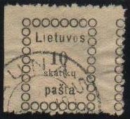
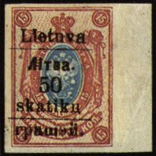
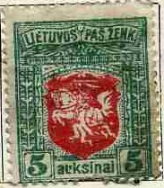
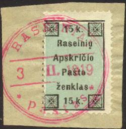
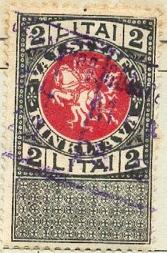

Lietuva - Litauen - Lithuanie
Return To Catalogue - Central Lithuania
Note: on my website many of the
pictures can not be seen! They are of course present in the
catalogue;
contact me if you want to purchase it.
Circles touching each other (4 lines of text, Vilnius printing, inscription 'pasta' without final 's')

10 s black 15 s black 20 s black 30 s black 40 s black 50 s black
Value of the stamps |
|||
vc = very common c = common * = not so common ** = uncommon |
*** = very uncommon R = rare RR = very rare RRR = extremely rare |
||
| Value | Unused | Used | Remarks |
| 10 s | RR | RR | |
| 15 s | RR | RR | |
| 20 s | *** | *** | |
| 30 s | *** | *** | |
| 40 s | R | R | |
| 50 s | R | *** | |
Circles don't touch each other (4 lines of text, 'skatiku', first Kaunas issue, inscription 'pastas' with final 's')
10 s black 15 s black 20 s black 30 s black
Value of the stamps |
|||
vc = very common c = common * = not so common ** = uncommon |
*** = very uncommon R = rare RR = very rare RRR = extremely rare |
||
| Value | Unused | Used | Remarks |
| 10 s | R | *** | |
| 15 s | R | *** | |
| 20 s | R | *** | |
| 30 s | R | *** | |
3 lines of text, currency 'sk' behind the value (second Kaunas issue, inscription 'pastas')
10 s black 15 s black 20 s black 30 s black 40 s black 50 s black 60 s black
Value of the stamps |
|||
vc = very common c = common * = not so common ** = uncommon |
*** = very uncommon R = rare RR = very rare RRR = extremely rare |
||
| Value | Unused | Used | Remarks |
| 10 s | *** | * | |
| 15 s | *** | * | |
| 20 s | *** | * | |
| 30 s | *** | * | |
| 40 s | *** | * | |
| 50 s | *** | * | |
| 60 s | *** | * | |
3 lines of text, currency ('sk') in front and behind value
(third Kaunas issue, inscription 'pastas')

(Reduced size)
10 s black 15 s black 20 s black 30 s black 40 s black 50 s black 60 s black
Value of the stamps |
|||
vc = very common c = common * = not so common ** = uncommon |
*** = very uncommon R = rare RR = very rare RRR = extremely rare |
||
| Value | Unused | Used | Remarks |
| 10 s | *** | * | |
| 15 s | *** | * | |
| 20 s | *** | * | |
| 30 s | *** | * | |
| 40 s | *** | * | |
| 50 s | *** | * | |
| 60 s | *** | * | |
Forgeries exist, by the way, I'm not sure if the above stamps are genuine, example of a forgery:

Deceptive forgeries exist of the first and second Kaunus issue, made by the postmaster of Lithuania (mr. Sruongo). He used the genuine printing plates to make them. They have the cancel '* MARIJAMPOLE * a' in a double circle with date in the center. Genuine stamps with this cancel were never found. Sruongo also made forgeries of other stamps of Lithuania with 'plate errors' and 'perforation errors'. He usually made sure a few of them were actually sold at the post office, such that genuinely used 'errors' existed. He was convicted to a prison sentence for this in 1935.

50 s on 3 k red 50 s on 5 k lilac 50 s on 10 k blue 50 s on 15 k brown and blue 50 s on 25 k green and violet 50 s on 35 k brown and green 50 s on 50 k lilac and green 50 s on 70 k brown and red


10 s red (two shades of red were issued) 15 s violet (two shades) 20 s blue (two shades) 30 s orange 30 s brown 40 s brown (two shades) 50 s green (two shades) 60 s violet and red 75 s yellow and red (two shades of yellow) 1 A grey and red (two shades) 3 A brown and red (two shades) 5 A green and red (two shades)
Imperforate stamps exist. In 1922 many of these stamps were surcharged:


'1 CENT.' on 10 s red '1 CENT.' on 15 s violet '1 CENT.' on 20 s blue '1 CENT.' (red) on 20 s blue '1 CENT.' on 30 s brown '1 CENT.' on 40 s brown '1 CENT.' (red) on 40 s brown '2 CENT.' on 50 s green '2 CENT.' on 60 s violet and red '2 CENT.' on 75 s yellow and red '3 CENT.' on 1 A grey and red '3 CENT.' on 3 A brown and red '3 CENT.' on 5 A green and red '5 CENT.' (green, vertically) on '4 AUKSINAI' on 75 s yellow and red '5 CENT.' (green, vertically) on '4 AUKSINAI' and bars on 75 s yellow and red '4 AUKSINAI' on 75 s yellow and red '4 AUKSINAI' and bars on 75 s yellow and red

With overprint 'SRODKOWA LITWA Poczta', issued for Central Lithuania
10 s red 15 s lilac 20 s blue 30 s brown 40 s brown and green 50 s red 60 s lilac 80 s violet and red 1 A green and red 3 A brown and red 5 A green and red
10 s red 15 s blue 20 s green 30 s brown 40 s green and violet 50 s brown and orange 60 s red and orange 80 s grey and red 1 A black and orange 3 A black and green 5 A black and grey
Some very rare proofs(?) (not more than a few thousand exist) were actually used for postage. The colors were different: 20 s green and lilac, 40 s olive, violet and yellow, 50 s brown and violet, 60 s red and green, 80 s green, red and black.
Sower 10 s red 15 s violet 20 s blue 4 A blue and yellow (1922) 8 A black and green (1922) Harvester
30 s brown 50 s green (also exists imperforate) 60 s green and violet King Keistut
40 s red 80 s orange and red 1 A brown and light green 2 A blue and red Man on horse carrying torch
3 A light brown and blue 5 A grey and red 10 A red and lilac 25 A light brown and green 100 A red and green (1922) Surcharged (1922)
'1 CENT.' on 50 s green (also exists imperforate) '3 CENT.' on 10 s red '3 CENT.' on 15 s violet '3 CENT.' on 20 s blue '3 CENT.' on 30 s brown '3 CENT.' on 40 s red '5 CENT.' on 50 s green '5 CENT.' on 60 s green and violet '5 CENT.' on 80 s orange and red '10 CENTU' on 1 A brown and light green '10 CENTU' on 2 A blue and red '15 CENTU' on 4 A blue and yellow '25 CENT.' on 3 A light bronw and blue '25 CENT.' on 5 A grey and red '25 CENT.' on 10 A red and lilac '30 CENTU' (red) on 8 A black and green '50 CENTU' on 25 A light brown and green '1 LITAS' on 100 A red and green
20 s orange and violet 40 s blue and red 60 s violet and green 80 s orange and green 1 A green and blue 2 A grey and red 5 A lilac and blue
Posthorn with wings 20 s blue 40 s orange 60 s green 80 s red Other designs
1 A green and red (aeroplane above road) 2 A brown and blue (aeroplanes following each other) 5 A olive and yellow (aeroplane and tower) Aeroplane above tower (design as 5 A, but smaller)
2 A blue and red 4 A brown and red 10 A black and light blue Surcharged (1922) '10 CENTU' on 20 s blue '10 CENTU' on 40 s orange '10 CENTU' on 60 s green '10 CENTU' on 80 s red '20 CENTU' on 1 A green and red '20 CENTU' on 2 A brown and blue '25 CENT.' on 2 A blue and red '30 CENTU' (red) on 4 A brown and red '50 CENTU' on 5 A olive and yellow '50 CENTU' on 10 A black and light blue
1 A brown and red 3 A violet and green 5 A blue and yellow Surcharged '1 LITAS' on 5 A blue and yellow
20 s black and red 40 s green and violet 50 s lilac and blue 60 s violet and orange 1 A red and blue 2 A blue and brown 3 A brown and blue 4 A green and lilac 5 A brown and red 6 A blue and light blue 8 A blue and yellow 10 A violet and green (3 men on one stamp)
1 c red, black and green 2 c black and lilac 3 c black and yellow 5 c blue, black and yellow 10 c black and orange 15 c black and green 25 c black and lilac 30 c black and red 60 c black and olive 1 L black and green 2 L black and red 3 L black and blue 5 L black and blue
Village 2 c brown (1924) 3 c olive (1924) 5 c green (1924) 10 c violet 15 c red 20 c brown 25 c blue 36 c brown (1924) Castle 50 c green 60 c red Town 1 L orange and green 3 L red and grey 5 L brown and blue Overprinted 'KARO NASLAICIAMS' in an arc (different for some values) and surcharged (charity issue, 1924) 2 c + 2 c brown 3 c + 3 c olive 5 c + 5 c green 10 c + 10 c violet 15 c + 15 c red 20 c + 20 c brown 25 c + 25 c blue 34 c + 36 c brown 50 c + 50 c green 60 c + 60 c red 1 L + 1 L orange and green 2 L + 3 L red and grey 3 L + 5 L brown and blue Overprinted 'KARO NASLAICIAMS' in an arc (different for some values) and surcharged, further surcharged (charity issue, 1926) 1 c (gold) on 2 c + 2 c brown 2 c (gold) on 3 c + 3 c olive 2 c (gold) on 5 c + 5 c green 5 c (gold) on 10 c + 10 c violet 5 c (gold) on 15 c + 15 c red 10 c (gold) on 20 c + 20 c brown 10 c (gold) on 25 c + 25 c blue 14 c (gold) on 34 c + 36 c brown 20 c (gold) on 50 c + 50 c green 25 c (silver) on 60 c + 60 c red 30 c (silver) on 1 L + 1 L orange and green Overprinted 'KARO NASLAICIAMS' in an arc (different for some values) and surcharged further surcharged with 'VP' and value in gold (charity issue, 1926 1 c on 2 c + 2 c brown 2 c on 3 c + 3 c olive 2 c on 5 c + 5 c green 5 c on 10 c + 10 c violet 10 c on 15 c + 15 c red 15 c on 20 c + 20 c brown 15 c on 25 c + 25 c blue 19 c on 34 c + 36 c brown 25 c on 50 c + 50 c green 30 c on 60 c + 60 c red 50 c on 1 L + 1 L orange and green 2 L + 3 L red and grey 3 L + 5 L brown and blue
20 c yellow 40 c green 60 c red 1 L brown Overprinted 'KARO NASLAICIAMS' in an arc (different for some values) and surcharged (charity issue, 1924) 20 c (red) + 20 c yellow 40 c (green) + 40 c green 60 c (green) + 60 c red 1 L + 1 L brown
20 c red 40 c violet and red 60 c blue and black (exists with inverted center)
2 c orange 3 c brown 5 c green 10 c violet 15 c red 25 c blue 30 c blue (1929)
15 c red and black 25 c blue and black 50 c green and black 60 c violet and black
1 L green and grey 3 L violet and green 5 L brown and grey
Portrait of Smetona 5 c brown and green 10 c violet and black 15 c orange and brown 25 c blue and black Man holding cross 50 c blue and lilac 60 c red and black Man with angel 1 L brown and dark brown
Image of king
2 c light brown and dark brown 3 c brown and violet 5 c green and orange 10 c violet and green 15 c red and violet 30 c blue and violet 36 c lilac and black 50 c green and blue 60 c blue and red Larger size (image of knight on horse)
1 L green, grey and brown 3 L brown and blue 5 L brown, grey and orange 10 L blue, light blue and black 25 L brown, red brown and grey Airmail (image of Juozas Tubelis)
5 c black, olive and yellow 10 c blue, black and grey 15 c red, blue and grey Airmail (woman with sword and aeroplane)
20 c brown, red and orange 40 c blue, violet and light blue Airmail (portraits of two men, aeroplanes above their heads)
60 c green, black and grey 1 L red, black and lilac
5 c blue and yellow 10 c brown and yellow 15 c brown and green 25 c blue and green 50 c grey and green 60 c grey and lilac 1 L blue and grey 3 L brown and green Airmail (triangular stamps) 5 c red and green (map of Lithuania) 10 c brown and yellow 15 c blue and yellow 20 c brown and orange 40 c brown and yellow 60 c blue and yellow 1 L brown and green 2 L blue and yellow
5 c red and brown (escape scene, inscription 'VYTAUTAS PASEGA IS KREVES PILIES 1362M.') 10 c brown and red-brown (design as 5 c) 15 c lilac and green (conversion, inscription 'VYTAUTAS IR JOGAILA KRIKSTIJA LIETUVA 1386M.') 25 c brown and light brown (design as 15 c) 50 c green and red (battle scene) 60 c green and lilac (design as 50 c) 1 L blue and grey (meeting of royals at Luzk) 3 L brown and green (design as 1 L) Airmail (triangular stamps) 5 c green and lilac (battle scene, inscription 'MUSIS PRIE SAULES 1236M.') 10 c green and red (design as 5 c) 15 c lilac and brown (coronation scene, inscription 'MINDAUGO VAINIKAVIM 1253M.') 20 c red and violet (design as 15 c) 40 c brown and black (King with knights) 60 c orange and black (founding of city by King) 1 L violet and green (conquering) 2 L blue and brown (King standing in front of Moscow)
5 c olive and blue 10 c violet and brown 15 c blue and violet 20 c brown and violet 40 c blue and violet 60 c brown and blue 1 L olive and blue 2 L violet and green
5 c green and red 10 c blue and red 15 c orange and red 25 c blue and brown 50 c olive and blue 60 c brown and dark brown 1 L red and brown 3 L blue and brown
5 c green and brown (mother and child) 10 c brown and blue 15 c green and brown 25 c orange and black 50 c green and red 60 c black and orange 1 L brown and blue 23 L violet and green
5 c red and blue 10 c violet and green 15 c green and brown 20 c lilac and blue 40 c brown and green 60 c blue and brown 1 L olvie and blue 2 L green and brown
20 c red and black (portrait of two pilots) 40 c red and blue (aeroplane above sea) 60 c violet and black (design as 20 c) 1 L black and orange (angel standing above crashed aeroplane) 3 L grey and orange (earoplane above globe) 5 L brown and light blue (aeroplane with knight and horse on background) Overprinted 'F.Vaitkus nugaleja Atlanta 21-22. IX 1935' (1936) 40 c red and blue (RR, not officially issued)
15 c red 30 c green 60 c blue
Arms in shield in upper left corner, value in shield in lower right corner
2 c red and orange 2 c orange (slightly smaller size, 1936) 5 c green and light green 5 c green (slightly smaller size, 1936) Three small arms in center, surrounded by ornaments
10 c brown 35 c red Harvesting woman
25 c brown and green 50 c blue and light blue Two women sitting with their back at each other
1 L brown and lilac 3 L green and light green Knight holding sword
5 L red-brown and light blue 10 L brown and yellow Overprinted 'LTSR 1940 VII 21' (1940)
2 c orange
15 c red 30 c green 60 c blue
15 c red 30 c green 60 c blue
I've seen these stamps with overprint 'Memelland ist frei' and swastika; the overprint is in blue on the 15 c, in red on the 30 c and in green on the 60 c:
5 c + 5 c green 15 c + 5 c red 30 c + 10 c blue 60 c + 15 c brown
This set exists with a boy-scout overprint.
15 c red (reading the declaration of independence) 30 c green (president A.Smetona) 35 c lilac (design as 15 c) 60 c blue (design as 30 c) Overprinted 'VILNIUS 1939-X-10' (1939)
15 c red 30 c green 35 c lilac 60 c blue
30 c + 15 c black 15 c + 10 c brown 60 c + 40 c violet (larger design)
15 s green (view of Vilnius) 30 s green (portrait of man, inscription 'GEDIMINAS') 60 s blue (view of Trakai)
I've seen a souvenir sheet with the above three stamps pasted on it. The inscription reads '1323 1939 URBS VILNIUS METROPOLIS LITHUANIAE RECUPERATA' in gold.
10 c green 25 c lilac 35 c red 50 c brown 1 L blue Overprinted 'LTSR 1940 VII-24'
50 c brown (blue overprint)
5 c red-brown (knight on horse) 10 c green (angel with cross) 15 c orange (woman releasing dove, exists imperforate) 25 c brown (family) 30 c blue (bell, exists imperforate) 35 c red (lion with tree) Overprinted 'LTSR 1940 VII-24'
5 c red-brown (blue overprint) 10 c green (red overprint) 15 c orange (blue overprint) 25 c brown (red overprint) 30 c blue (red overprint) 35 c red (blue overprint)
Inscription 'Raseiniu Apskricio Pasto zenklas' (1919?):

Inscription 'VALSTYBES RINKLIAVA':
In the above design I have seen: 30 c lilac and red, 50 c brown and red, '1 LITAS' on 10 a blue and red.

In the above large design I have seen: 2 L black and red, 5 L orange and red. I have also seen a surcharge stamp: '2 LITU' on 100 a blue and red.
Small sized stamps 2 k green 5 k red 10 k blue 15 k green (soldier) 20 k green (woman) 30 k blue (pilot) 50 k brown (woman) 60 k red (arms) Larger size (with larger overprint) 80 k blue
Stamps of the Sowjet Union, overprinted 'Laisvi Telsiai 1941. VI. 26.'

http://members.fortunecity.com/jtckaptein/philatelyoflithuania/onaeng.htm
In 1920 the Memel territory (formerly belonging to Germany) was put under the influence of France. It joined Lithuania in 1923. For examples of these stamps see Cd 1.